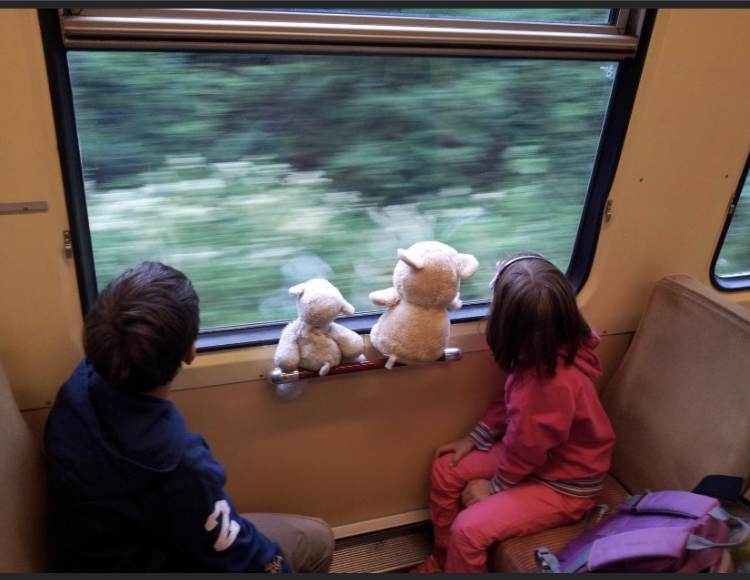

Life
My name is Alexander Erik Luan Holmgren. I was born on the 29th of July
2004 at "Karolinksa sjukhuset" around 7:00 in the morning. I was a child
of mixed backrounds. Mom with german and swedish roots, and a dad that
is 100% albanian. I spent my first few years in Solna until i moved to
Germany in 2010. I stayed there for 2 years until my dad was offered a
job again back in sweden. Since then I have lived in Solna again,
Vallentuna and now, Ellapark Täby. I live with my mom and dad, Enri and
Petra, a sister named Fiona and two cats called Moe and Wall-e (named
after charachters from popular pixar movie, Wall-e). I attend Åva
gymmnasium studying Technology and well, that is why i am making this
very website:>

A picture of me and my sister, many years ago on a train in Germany,
of course accompanied by our stuffed animals